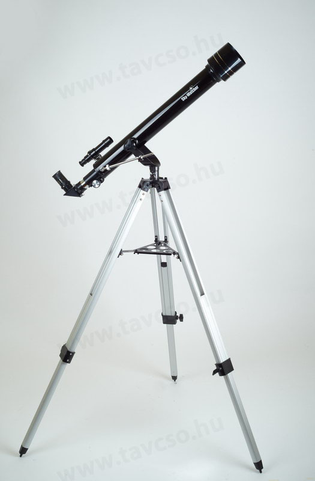

60/700 SkyWatcher Mercury-607 refraktor
AZ2 mechanikán

60/700 SkyWatcher Mercury-607 refraktor AZ2 mechanikán, 5x24 keresővel, 20mm (35x) és 10mm (70x) Barium okulárokkal, zenittükörrel és terresztikus képfordítóval
A termék részletes leírása
Ennek a távcsőnek nagyon fontos előnye, hogy állványa egyszerű, ezért nagyon könnyen megtanulható a mozgatása, így a távcsővel könyű a keresés és a célzás még gyerekeknek is. Objektívje egy 60 mm-es akromatikus objektív, mely természetesen üveglencsés. Képalkotása elegendően jó ahhoz, hogy a Hold krátereit közelről tanulmányozhatjuk, a Jupiter felhősávjait és holdjait is megfigyelhetjük. Továbbá megpillanthatjuk vele a Szaturnusz gyűrűjét megfelelő időszakban pedig a Mars hósapkáit is észrevehetjük, valamint a Vénusz fázisváltozásait is nyomon követhetjük. A híres kettőscsillagok (Albireo, Castor, e Lyrae, Alcor-Mizar, stb.) is már levadászhatóak ezzel a műszerrel.
A tartozék okulárjai (Barium 20 és 10mm) az áruházi hasonló árú modellekkel ellentétben nagyon jó minőségűek, így a képminőség azoknál lényegesen jobb. Nagyítása 35x és 70x-es, de ez a szabványos 31,7 mm-es okulárkihuzatnak köszönhetően bővíthető. A nagyítást körülbelül 100x-ig érdemes növelni. Egy terresztrikus toldat is tartozék, hogy földi megfigyelésre is használni lehessen a távcsövet.
| Előnyök | Hátrányok |
| Egyszerű összerakni, egyszerű kezelni. A Saturnust látni így csodálatos élmény! | Meglepett milyen gyenge anyagból készült, érintésre igen törékenynek tűnik, vigyázni kell rá. Állványon való vertikális rögzítése igen pontatlan. A holdon és csillagokon túl mást nem lehet vele látni. |
| Nagyon szép, éles képet ad. A csillagok és a hold jól látszanak. Akár egy kirándulás alkalmával tájakat is meg lehet vele nézni. Könnyű kezelni, pillanatok alatt fel lehet állítani. | mechanika gyengécske |